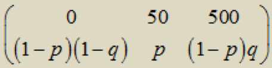

A ticket for a train costs 50 pence, and the penalty for a ticketless trip is 450 pence. If the free rider is discovered by the controller, he pays both the penalty and the ticket price. It is known that the controller finds the free rider on average once out of every 10 trips. The free rider got acquainted with the basics of probability theory and decided to adhere to a strategy that gives the mathematical expectation of spending the smallest possible. How should he act: buy a ticket every time, never buy one, or throw a coin to determine whether he should buy a ticket or not?
Let the probability of buying a ticket be p, and the probability of the appearance of a controller be q. The random variable X "Travel expenses" has a distribution.

The mathematical expectation of costs is EX = 50p + 500 $($1 - p$)$ q = 500q - 50p $($10q - 1$)$. By the condition q = 0.1. Consequently, EX = 50, that is, it does not depend on p. There is a "balance" - the average cost per trip does not depend on the frequency or probability of buying a ticket.
It does not matter.